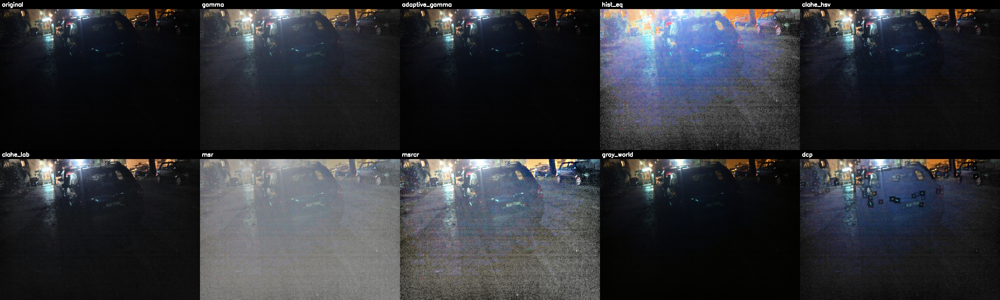
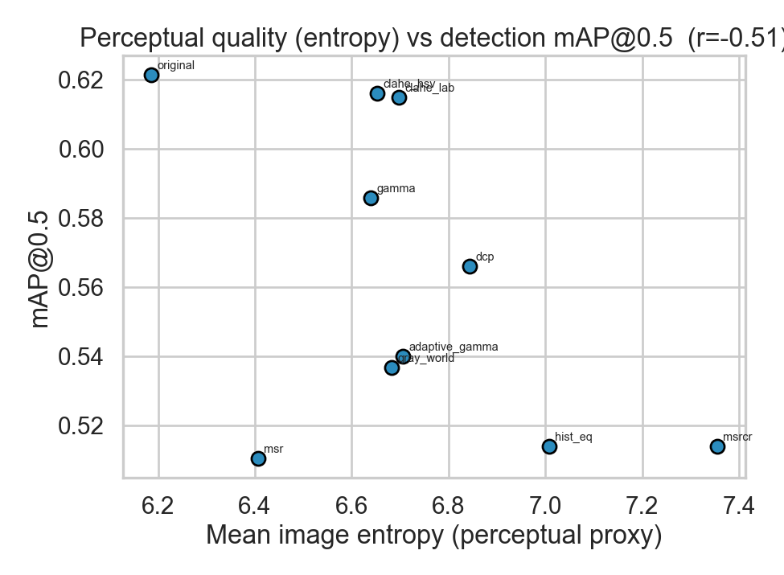
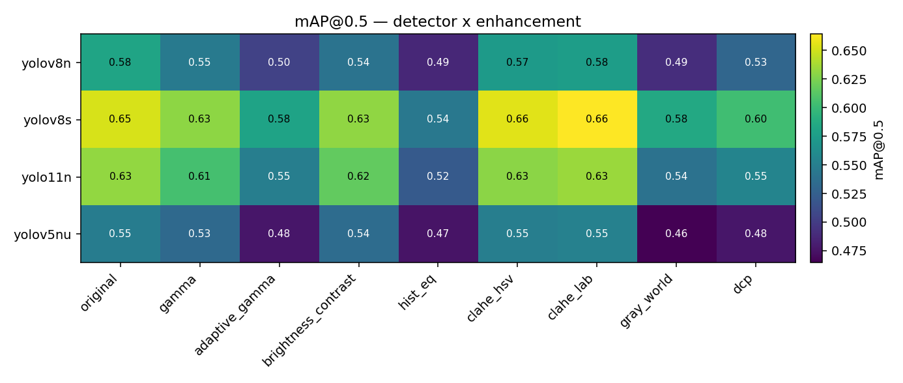
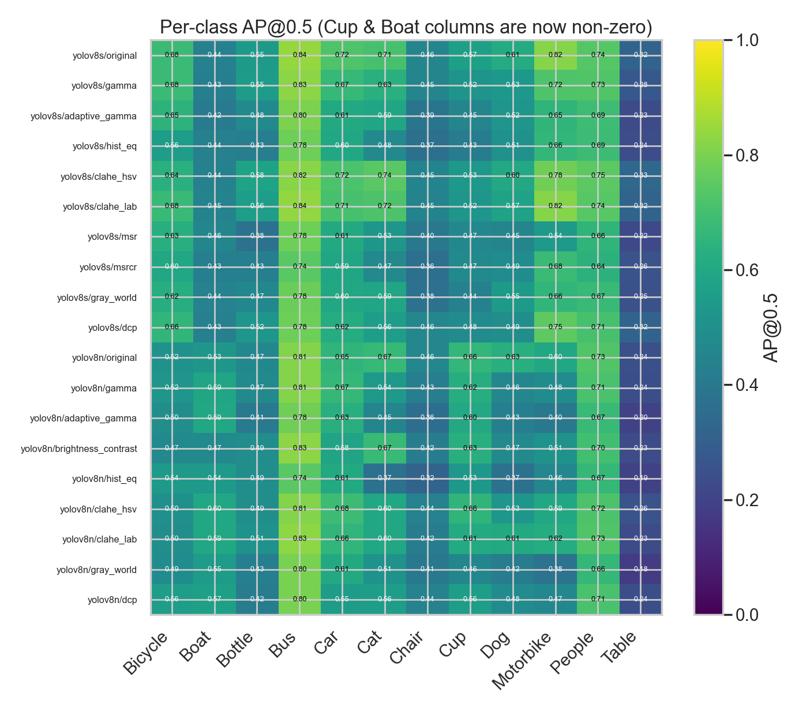
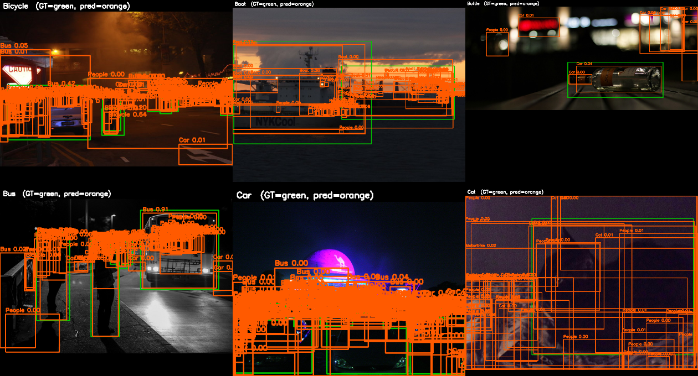

Does brightening a dark photo help a model see it?
A course project once concluded that low-light enhancement gave barely any improvement. This rebuild shows that the answer was correct, yet it had been measured with a broken ruler. With a corrected evaluator and a sweep across six detector architectures, a clearer and more honest picture emerges.
By Luis Avalos / Dataset: ExDark, 7,363 images, 12 classes
Not because the conclusion was wrong, but because the measurement was.
The starting point was a student project on the ExDark low-light dataset. It reported one precision, recall, and average precision triple per enhancement method. The numbers were nearly identical, so the takeaway became "enhancement does not help."
The deeper issue was that the evaluation could not have shown a difference either way. Three independent flaws made the experiment impossible to interpret, and a fourth quietly distorted the geometry of every image.
Four flaws, four fixes
Broken metric. A per-image precision and recall value was averaged in place of mAP, which collapses the curve. Fixed with a pooled, 101 point COCO-style average precision.
Missed objects were invisible. The per-image score ignored false negatives. The recall denominator now counts every ground-truth object.
The Cup class was dropped. It was missing from the class map, so every Cup object was discarded. It is now mapped correctly.
The Boat class was mislabeled as "traffic light," forcing its score to roughly zero. It now maps to the right category.
The original conclusion happened to match reality, but it was a guess dressed as a result. The contribution here is making that conclusion trustworthy, and then discovering what the broken metric had hidden.
02 / approach
A research-grade benchmark
One reproducible pipeline that runs on any machine, choosing a GPU, Apple silicon, or the CPU automatically.
The framework rests on a correct evaluator that reports mAP at an IoU of 0.5, mAP averaged from 0.5 to 0.95, per-class average precision, and bootstrap confidence intervals. It is cross-checked against the Ultralytics validation routine. Six detectors run through a single adapter, spanning four generations of the YOLO family alongside the transformer-based RT-DETR. Twelve enhancement methods sit behind one interface, covering gamma, brightness and contrast, histogram methods, the Retinex family, white balance, and a dark channel prior.
Every result is deterministic. A seed-fixed, class-stratified split is committed to the repository, so each experiment draws from the identical partition.

The same low-light frame under several enhancement methods. Some look far brighter to a person, yet looking better and detecting better turn out to be only loosely related.

Perceptual quality plotted against detection accuracy. The weak relationship is the point. Enhancement tuned for the human eye is the wrong objective for a detector.
03 / finding one
On a frozen detector, enhancement is neutral
Every detector against every enhancement, on the same images, through the same evaluator.
The table reports mAP at an IoU of 0.5 for a detector that was never adapted to the enhanced images. The best value in each row is shown in green.
Detector
original
gamma
adapt-g
br/con
hist-eq
CLAHE-HSV
CLAHE-LAB
gray-world
DCP
YOLOv8n
0.581
0.547
0.504
0.540
0.487
0.574
0.575
0.491
0.530
YOLOv8s
0.652
0.630
0.581
0.631
0.545
0.655
0.664
0.585
0.603
YOLO11n
0.632
0.605
0.550
0.617
0.521
0.630
0.634
0.540
0.555
YOLOv5nu
0.548
0.533
0.477
0.535
0.475
0.550
0.552
0.465
0.476
mAP at IoU 0.5, zero-shot COCO detectors, ExDark test subset, 15 images per class. These numbers reproduce on any device. Only throughput changes.
Averaged across all detectors
CLAHE on the LAB color space is the only method that beats doing nothing, and it wins by three thousandths of a point, which sits inside the bootstrap confidence interval. Everything else is neutral or harmful. Aggressive global brightening, such as histogram equalization and gray-world balancing, pushes the image away from the natural-photo statistics the detector expects, and accuracy falls.
Enhancement
mean mAP
change vs original
CLAHE-LAB
0.606
+0.003
original
0.603
0.000
CLAHE-HSV
0.602
-0.001
brightness/contrast
0.581
-0.023
gamma
0.579
-0.025
DCP
0.541
-0.062
adaptive-gamma
0.528
-0.076
gray-world
0.520
-0.083
hist-eq
0.507
-0.096
Mean across the four detectors above.

The full detector against enhancement matrix as a heatmap. The original and CLAHE columns dominate, and the verdict holds across four architectures from three YOLO generations.
The conclusion is robust precisely because it holds across different kinds of model. It is not an artifact of one network. On a detector that never adapted to the enhanced domain, classical enhancement does not help.
finding two
The per-class wins were noise
A single model made enhancement look helpful for specific classes. It did not replicate.
On YOLOv8s alone, CLAHE on LAB appeared to lift several classes, with Bottle, Cat, and Dog each rising by a noticeable margin. It was tempting to call that a result.
Averaging each class across all four detectors tells a different story. Only Motorbike improves on every model. Every other class is mixed. Bottle rises on two detectors and falls on the other two, and Dog swings from a clear gain to a larger loss. That pattern is the fingerprint of sampling noise at fifteen images per class, not a real effect.
A correct evaluator does more than hand you the right number. It lets you tell a real effect from a lucky one. Checking a single-model finding against the other models is what turned a false positive into an honest null result.

Per-class average precision across enhancement methods. The recovered Cup and Boat rows now carry real signal, yet no enhancement consistently lifts any single class.

Ground-truth boxes in green against predicted boxes in orange, on held-out low-light images.
04 / what is next
The decisive experiment
Everything so far tests a frozen detector, which is the setting where enhancement is expected to be neutral. The real question needs the detector to learn the enhanced domain.
A model pretrained on ordinary photographs has never seen CLAHE-processed pixels, so feeding it enhanced images is an out-of-distribution test. The published literature shows enhancement pays off only when the detector is fine-tuned on the enhanced domain. The project ships a controlled comparison. It fine-tunes the same base model on original images and on enhanced images, holding the epochs, the split, and the seed identical, and changing only the pixels. It then evaluates a grid of training domain against test domain. The matched diagonal of that grid is the fair answer, and it runs on a GPU machine.
Context from the published record
Method
mAP at 0.5
Zero-shot COCO YOLOv3
0.21
Fine-tuned YOLOv3 baseline
0.764
Zero-DCE plus YOLOv3
0.769
MAET, 2021
0.777
IAT-YOLO, 2022
0.778
PE-YOLO, 2023
0.780
Canonical ExDark numbers on the official split.
The entire four-year span of published results covers roughly 1.6 points of mAP, while fine-tuning alone is worth about 0.55. That ratio is the thesis. Adapt the detector, rather than polish the pixels.
Zero-shot against fine-tuned accuracy, illustrating the dominant lever. A clean GPU run replaces the earlier CPU placeholder.
05 / reproduce
One command, any platform
It runs on macOS, Windows, and Linux. The device is detected automatically, and the benchmark needs no GPU.
# environment
python -m venv venv
source venv/bin/activate # windows: venv\Scripts\activate
pip install -r requirements.txt
# run the whole study
python run.py # full benchmark and report
python run.py --quick # fast smoke test
python run.py --full # six detectors, all twelve enhancers# the decisive comparison, on a GPU machine
python run.py --stages domain report --domain --device auto \
--domain-enhancers original clahe_lab --ft-epochs 100 --ft-fraction 1.0
Correctness first. Known-answer tests pin the evaluator and the enhancers before any model runs.
Provenance built in. Every metrics file records its device, and a tag option archives a per-machine snapshot, so identical accuracy across two computers is easy to show.
Self-documenting output. A single run writes the comparison, the heatmap, the tables, and an HTML report. The figures here are generated, not drawn by hand.